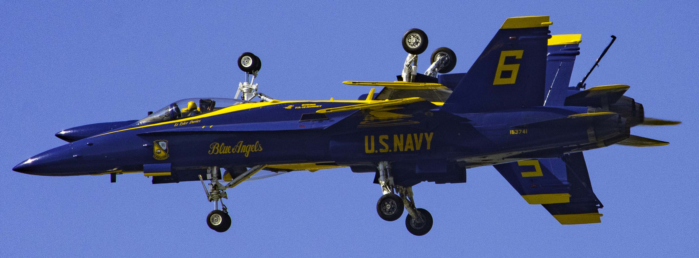
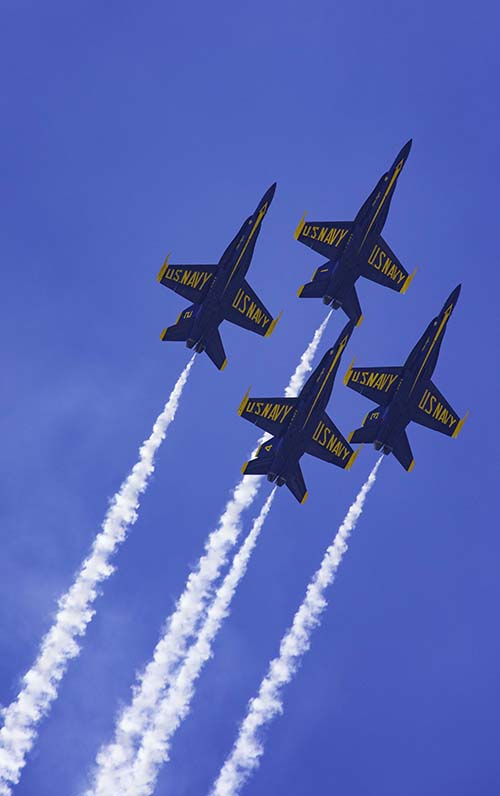

The U.S. Navy Blue Angels

Home
Schedule
Contact
Official Site

Schedule for the U.S. Navy Blue Angels
MARCH
9 | NAF El Centro, CA | NAF El Centro Festival of Flight
16 · 17 | Travis AFB, CA | Wings Over Solano
23 · 24 | NAS JRB New Orleans, LA | New Orleans Air Show
APRIL
6 · 7 | Maxwell AFB, AL | Beyond the Horizon Air & Space Show
13 · 14 | NAS JRB Fort Worth, TX | Fort Worth Air Power Expo
20 · 21 | Orlando, FL | Air Dot Show Tour - Orlando
27 · 28 | Vidalia, GA | Vidalia Onion Festival Air Show
MAY
4 · 5 | Vero Beach, FL | Vero Beach Air Show
11 · 12 | MCAS Cherry Point, NC | MCAS Cherry Point Air Show
22 | USNA, Annapolis, MD | U.S. Naval Academy Air Show
24 | Annapolis, MD | U.S. Naval Academy Graduation Flyover
25 · 26 | Jones Beach, NY | Bethpage Air Show
JUNE
1 · 2 | Terre Haute, IN | Terre Haute Air Show
8 · 9 | Chesterfield, MO | Spirit of St. Louis Air Show
15 · 16 | La Crosse, WI | Deke Slayton Airfest
22 · 23 | Dayton, OH | CenterPoint Energy Dayton Air Show
29 · 30 | Traverse City, MI | National Cherry Festival Air Show
July
6 · 7 | Johnson City, NY | Greater Binghamton Air Show
13 | Pensacola Beach, FL | Pensacola Beach Air Show
AUGUST
3 · 4 | Seattle, WA | Boeing SeaFair Air Show
10 · 11 | Chicago, IL | Chicago Air and Water Show
17 · 18 | Colorado Springs, CO | Pikes Peak Regional Air Show
24 · 25 | Wichita, KS | Frontiers In Flight Air Show
31 | Cleveland, OH | Cleveland National Air Show
SEPTEMBER
1 · 2 | Cleveland, OH | Cleveland National Air Show
14 · 15 | Owensboro, KY | Owensboro Air Show
21 · 22 | NAS Oceana, VA | NAS Oceana Air Show
28 · 29 | MCAS Miramar, CA | MCAS Miramar Air Show
OCTOBER
5 · 6 | Reno, NV | National Championship Air Races & Air Show
12 · 13 | San Francisco, CA | San Francisco Fleet Week
19 · 20 | NAS Jacksonville, FL | NAS Jacksonville Air Show
26 · 27 | Houston, TX | Wings Over Houston Air Show
NOVEMBER
1 · 2 | NAS Pensacola, FL | Blue Angels Homecoming Air Show